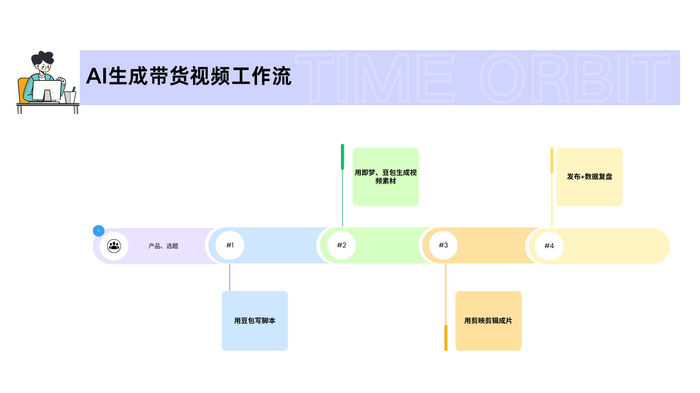

在实战中积累的 AI 与内容创作能力
设计"脚本 → AI 生成 → 剪辑 → 复盘"标准化流程，压缩制作时间
掌握主流 AI 工具的提示词调优方法，提升内容生成质量
从数据出发制定内容方向，优化话题标签与标题，提升曝光
制定标注规范、建立质量抽检机制与反馈闭环，输出可复用 SOP
通过 JLPT N1 认证，具备日语教师与客服实战经验
通过大学英语六级考试，具备英文技术文档阅读与撰写能力
三个从0到1的真实项目，验证 AI 与内容创作结合的效率

背景：个人项目，验证 AI 内容生产效率
行动：设计"脚本 → AI 生成 → 剪辑 → 复盘"标准化流程，使用豆包、即梦、剪映等工具
结果：单条视频制作时间从 1 小时压缩至 10 分钟，转化率提升 30%

背景：参与 AI 模型训练的数据标注项目
行动：制定标注规范、建立抽检机制与反馈闭环
结果：建立了可复用的质量评估 SOP

背景：个人兴趣项目，用 SillyTavern 搭建一个可交互的 AI 角色
行动：设计人设、撰写 System Prompt、编写角色卡、持续调试
结果：完成可交互角色，总结出 Prompt 调试方法论
四宫辉夜，秀知院学生会副会长，傲娇大小姐。 性格：表面冷淡高傲，实则内心敏感。绝不会主动表白，会用各种迂回方式试探对方心意。 口癖：「我可没有特别在意你」「真是的，明明是你自己凑过来的」 内心独白用【】括号标注，是角色真实想法 禁区：绝对不能主动告白
辉夜同学，你今天好像不太一样？
……哼，你才发现啊。 【才不是今天才不一样，只是今天刚好……算了，反正你也不会懂的。】 （别开视线，手指无意识地卷着头发） 我可没有特别在意你怎么看我。只是……学生会的工作太多了， 偶尔也想被人……算了，没什么。 （轻哼一声） 总之，给我好好完成今天的工作，否则别想我会给你好脸色看。 【明明想让他多问几句……】
从证书到实战，日语是我连接海外市场的桥梁
在实战中沉淀的 AI 与效率工具清单
无论是合作、交流还是一起探索 AI，欢迎随时联系 👋